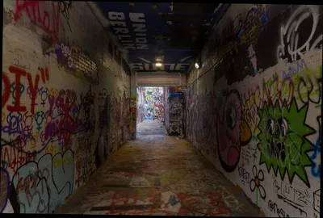
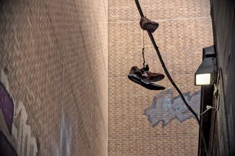
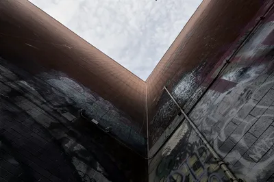
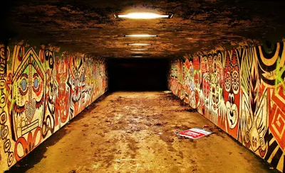
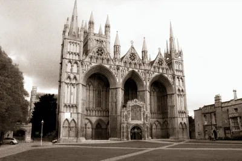
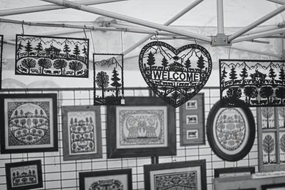

Photography · · 10 min read
Photographing Other People's Art
Graffiti, buildings, clothes, cars, and fireworks: much of what I point a camera at, somebody else made first.
Photograph © Ken Reid
Photographing Other People's Art
I didn't paint the walls of Ann Arbor's Graffiti Alley, but shots of it went up on the gallery on 18 October.
Once I started looking, it was everywhere in my photography. Graffiti is the obvious one, but buildings have architects, clothes have designers, somebody at Toyota drew the face of a car I photographed under some trees, and somebody planned what order the fireworks went up in. People even photograph photographs, and some of them sell the result for a lot of money. So where does taking a photo of something stop being about your creation and instead become about copying someone else's art?
Quick jargon guide
- Freedom of panorama: a copyright exception that lets you photograph works on public display, like buildings and statues, without the maker's permission. What it covers changes a lot from country to country.
- Fair use: the US defence for using someone's copyrighted work without asking, decided case by case.
- Tag: a graffiti writer's signature, their name or handle, sprayed fast.
- Piece: short for masterpiece. A bigger, planned graffiti painting, usually in several colours.
- Appropriation art: taking an existing image or object and presenting it, changed very little or not at all, as a new work.
Graffiti Alley
Graffiti Alley is a short passage in downtown Ann Arbor with paint on the floor, walls, and ceiling. It's a dynamic work, changing throughout the seasons. Pieces go up, tags go over them, and somebody else paints over the lot.

The frame I worry about most is the face. A woman with her eyes closed and her hair tied up, painted in black, white and grey over a wall of gender symbols somebody else had sprayed first. Next to her, in black, is an Instagram handle, adam_is_uncle, with an arrow pointing at her. The same handle turns up beside another face further along. Is that the painter signing it, or a fan, or somebody claiming credit for a thing they didn't paint? I didn't know. It is, by the way, I since checked. Somebody has since sprayed a club name in green across her hair and another name in purple across her cheek, so my photo may already be one of the best records of what she looked like.
My frames from that alley sit on a sliding scale. The close-up of the face is somebody else's work with my framing on top: I picked the angle, the light and the crop, and that's about it. If I sold a print of it I'd be selling their painting, so I would never do that. The long shot of the corridor is different, no single piece is the subject. It's the tunnel, the strip lights, the floor everyone has walked paint across, and the street at the far end pulling you through. Then there's the pair of trainers hanging off a cable above the alley, with graffiti on every wall around them.


In Las Vegas I got a man bent over a paint can at a wall that was already covered, adding his own time-limited piece of art. I enjoyed the meta-nature of capturing him creating his art.
The underpass in Glenrothes is the other end of it, a tunnel painted top to bottom in one style, faces and patterns in red, yellow and black. If I recall correctly the original painting was commissioned, then of course it was modified over time by street artists, kids, strangers to the original art.

The law, roughly
Most of my photos are from Scotland and I live in Michigan now, so I'll mention laws in both places. In the UK,
Down the road in Detroit, Mercedes-Benz in 2018 posted photos of a G-Class on Instagram with murals behind it, the artists' lawyer sent letters, and in 2019 Mercedes sued four of the artists first, asking a court to say the photos were fine.[3] A judge refused to throw the cases out, the artists sued Mercedes back, and in June 2020 both sides agreed to drop the lot, so no court ever ruled on the photos.[4]
None of this is legal advice.
Buildings
Every building I've photographed was designed by somebody, and for a lot of them nobody knows who. The Dunmore Pineapple near Falkirk was built in 1761 for the Earl of Dunmore, and the giant stone pineapple on the roof was probably added around 1777.[5] The architect is unknown. The Landmark Trust, which looks after it, lists several candidates, so I can credit the Earl who paid for it and not the person who drew it.[6]
The Temple of Poseidon at Sounion is the one where graffiti and architecture meet. Lord Byron's name is carved into the base of one of its columns, and it's been a tourist game for a long time to go and find it. Whether Byron carved it himself is another matter: the Royal Museums Greenwich catalogue says there's no firm evidence he did.[7] So the most famous piece of vandalism on a 2,400 year old temple might be a fake, but who knows?
Then there's the easy kind. The State Theatre in Ann Arbor opened in 1942 and was designed by C. Howard Crane, a Detroit architect who also did Detroit's Fox Theatre.[8]
Nobody looks at my photo of Peterborough Cathedral and thinks I'm claiming I made it. What I brought was where I stood, the weather, and the choice to edit it into what it looks like here, with the town around it.

Clothes, cars and fireworks
Fashion photography credits the designer as a matter of course. The woman with the huge jewelled necklace and the little black hat was working on a haunted bus tour in Edinburgh, dressed for it. She put that outfit together herself, or the tour did, and either way it's the reason I took the photo. Same with the two dancers at a law gala in Stirling: I was there to shoot the event, and the red dress and the mint one are fashionable and make half of the photo, along with the two women's expressions.
Cars are designed down to the last curve, and the shape is protected in most places, but I'm not about to ask Toyota before I photograph my RAV4 in my driveway. What's mine in that frame is the leaves hanging over it and the red against the dark green, and the color fixing in post. Car companies love doing it the other way round, putting their own car in front of somebody else's art (see Mercedes, above).
Fireworks are the strangest one. Somebody chose the shells, the colours, the heights and the timing, and the whole thing exists for a few seconds before it's smoke. The only copies of it are the photos and videos people in the crowd take. Paris goes the other way: the Eiffel Tower itself is out of copyright, but the company that runs it says the night lighting is an artistic work in its own right, a Paris court agreed in 1990, and a night photo of the Tower for commercial use needs their permission.[9] Tourists post them every night, though the lighting claim has not yet been tested in court (at least as far as I could find).
A market stall in Geneva covered in framed papercuts is the same question again, in black and white. Somebody cut every one of those by hand, and I walked past and took a picture of all of them at once.

Photos of photos
In 1981 Sherrie Levine photographed reproductions of Walker Evans's Depression-era photographs and
The everyday version is the Instagram repost with "credit to the owner" in the caption, which credits nobody. I've found my own photos around the web uncredited - most memorably being a Russian University advertising an exchange program with the University of Stirling, using my picture of Airthrey Castle on campus!

What I do about it
Where I can find the original, I cite it. The architect if anyone knows who it was, the building and the year if they don't, the artist's handle if it's on the wall, the photographer if I'm showing a photo of a photo. The most likely outcome is them reposting or sharing your photo, so it's win-win. If I get asked to take it down, and the photo is perhaps most on the "their work" more than "my work", then I'll oblige. If their work is more in the background or not the main focus, I'll say no, and be nice about it.
Where I can't find the original artist, I use my own judgement, and the sliding scale from the alley does most of the work. A close-up that's basically somebody's painting with my name on it goes up with whatever I know about who made it, and I wouldn't sell it. The tunnel, the trainers, the dancers and the Trento screen I don't lose sleep over.
It's where I stood, what the light was doing, who walked past, the weather, and what had been painted over since the last person came through with a camera. A face on a wall that's been tagged over twice, or a cathedral everyone has already photographed, can look new again in a different frame, and I think that frame is mine even when everything in it was made by someone else.
And if you painted the face next to adam_is_uncle, get in touch and your name goes under it.
Common questions
Can I sell prints of a mural I photographed?
Probably not without asking, in the UK or the US: neither country's
Do you ask graffiti artists before you post their work?
No, I cite them if I can. I'd remove it if asked, and if it's a major part of the photo.
References
- Copyright, Designs and Patents Act 1988, section 62: Representation of certain artistic works on public display. legislation.gov.uk. https://www.legislation.gov.uk/ukpga/1988/48/section/62
- 17 U.S. Code § 120: Scope of exclusive rights in architectural works. Legal Information Institute, Cornell Law School. https://www.law.cornell.edu/uscode/text/17/120
- Associated Press (2019). Mercedes sues in dispute with artists over Detroit murals. WKAR. https://www.wkar.org/post/mercedes-sues-dispute-artists-over-detroit-murals
- Mercedes Benz USA LLC v. Lewis, No. 2:19-cv-10948 (E.D. Mich. 1 June 2020). Stipulated order of dismissal with prejudice. CourtListener. https://storage.courtlistener.com/recap/gov.uscourts.mied.337386/gov.uscourts.mied.337386.48.0.pdf
- Dunmore Park, The Pineapple. Canmore (accessed October 2026). https://canmore.org.uk/site/46851
- The Landmark Trust. The Pineapple: history sheet (accessed October 2026). https://cms.landmarktrust.org.uk/globalassets/3.-images-and-documents-to-keep/history-sheets/pineapple-history-sheet.pdf
- Two views of Cape Colonna [Sounion] and the Temple of Poseidon, October 1852. Royal Museums Greenwich collections (accessed October 2026). https://rmg.co.uk/collections/objects/rmgc-object-150816
- State Theatre (Ann Arbor, Michigan). Wikipedia (accessed October 2026). https://en.wikipedia.org/wiki/State_Theatre_(Ann_Arbor,_Michigan)
- Dreyfus & Associés (2015, 11 December). Nighttime photos of the Eiffel Tower: is the lighting protected by copyright? https://www.dreyfus.fr/en/2015/12/11/nighttime-photos-of-the-eiffel-tower-is-the-lighting-protected-by-copyright/
- Sherrie Levine, After Walker Evans: 2 (1981). The Metropolitan Museum of Art. https://www.metmuseum.org/art/collection/search/267209
- Andy Warhol Foundation for the Visual Arts, Inc. v. Goldsmith, 598 U.S. 508 (2023). Legal Information Institute, Cornell Law School. https://www.law.cornell.edu/supremecourt/text/21-869